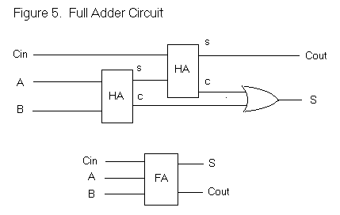

Full adders are obviously made of 2 half adders, as well as an OR gate. What is special about a Full adder is that is has 3 inputs and only 2 outputs. In a later lesson you will see how this makes sense. Cin stands for "carry in" and Cout stands for "carry out." Each Cin is connected to the Cout of a previous full adder. Each bit of the input, in a pair of A and B, is used for every following full adder.

The image below is the written representation of a full adder and its 3 inputs (Cin, A, B) and 2 outputs (Cout, S). The chart below shows the combinations of inputs and their resulting outputs:
| CI | A | B | S | CO |
| 0 | 0 | 0 | 0 | 0 |
| 0 | 0 | 1 | 1 | 0 |
| 0 | 1 | 0 | 1 | 0 |
| 0 | 1 | 1 | 0 | 1 |
| 1 | 0 | 0 | 1 | 0 |
| 1 | 0 | 1 | 0 | 1 |
| 1 | 1 | 0 | 0 | 1 |
| 1 | 1 | 1 | 1 | 1 |